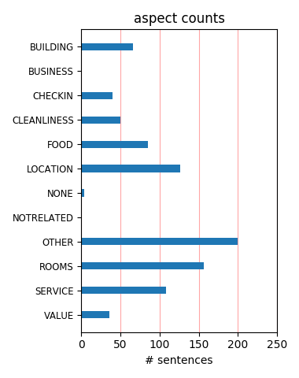
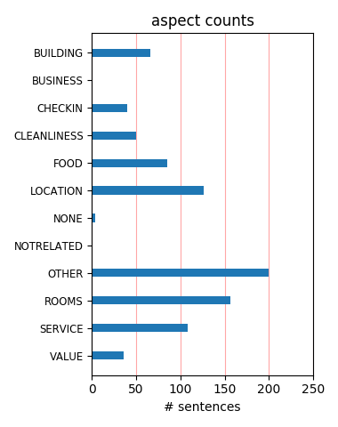

We enjoyed the commerce and crowds on Duval but really enjoyed being able to escape it at the Santa Maria. Only a block from the famous street and we had a quiet, clean and hospitable hideaway. Very friendly staff (thanks Derek), great pool area and well run property. Will return!!
We had a great trip to Key West, I was traveling with 3 girlfriends and all the staff @ Santa Maria Suites were helpful, fun and always smiling! They really added to the great time we had on our trip. We would recommend this place to everyone, it is worth the money. Location is great too.
we went for four days and it wasn't long enough. traveled with two other couples. we all stayed at different hotels. all near duvall. all were excellent, but santa maria is our favorite. it's the hotel staff that made the difference. they gave good advice on where to go and places to eat. We'll be back soon!
Three of us stayed at SMS last April. Loved the suite.....had a bi-level.....two bedroom......plenty of room both upstairs and downstairs. Huge kitchen! Nice pool.....free slushys.....free ice cream bars, fruit. and muffins!! What we all loved the most was the location. We all rented bikes and road them everywhere.
This hotel is worth every penny. The apartment is beautiful and the kitchen nicer than mine at home! The kids loved the fruit smoothies and ice lollys that the lovely lady by the pool brings to you. Although we struggled in Key West to find child friendly bars the hotel made up for the lack of evening entertainment.
Santa Maria is truly a gem among Key West hotels. Large suites in quiet location. Walking distance to all city attractions and beach membership at Duval Beach. It's staff is also frist grade: everyone from Jacek at the desk to Derek at the pool made me feel special from the moment I walked in. Be back first chance I get.
This place lives up to the hype. The room was better than expected. Staff is uber friendly. Free smoothies at the pool. Sushi was best I have had in a long time. Mini market across the street. Washer and Dryer was a huge help. Cucan deli with awesome coffee across the street. I can't say enough good things about the Santa Maria.
We love the Santa Maria. Gorgeous suite overlooking the pool. As soon as you drive up you just feel relaxed. The room and bathrooms were spectacular. Wonderfully comfortable bed. Loved the cheese and cracker and smoothies they provide by the pool. My husband and I love the Santa Maria and our second visit was just as wonderful as the first.
Stayed for two nights with my wife and some friends. Thoroughly enjoyed the ambience and the service, pity about the unseasonal weather. Would like to return one day if the opportunity arises Wonderful spot to stay in Key West, rather pricey but worth every penny. Shame we didn't get our 'turn down ' chocs on the pillows! A great place to stay.
I cannot speak highly enough about Santa Maria Suites. We visited with another couple, and everything about our visit was fabulous! Everyone was overly helpful and nice, the suites are perfect for two couples, and the beach is just a short walk away. Happy hour by the pool is also great! I would definitely recommend Santa Maria Suites to anyone visiting Key West.
So wonderful! Beautiful, spacious and high end. We've got marble, granite, travertine surfaces. Our fridge is subzero and we could have a party in our suite, it's that spacious. Happy hour at the pool is just lovely. Now, with all of this, the best part is the staff, they are fantastic! Kind, helpful, knowledgeable ane they do their best to make us feel like we are special.
Beautiful hotel Large rooms with free car parking. Nice pool area free towels and soft drinks during the day. At one end of Duval street near the southern most point in America The drive from Miami South Beach was over 5 hours as so many miles are driven at the 45 mph speed limit. There is little view on the drive south or north, so stay 2 nights in Key west. Try eating at Hard Rock
For selecting this hotel as our destination. The property is spacious and up to date. This was within walking distance to everything. You even had a small beach next door if you just want an ocean breeze. The best part however is the outstanding customer service! Â We stayed a full week with a first floor pool view. If we decide to return to Key West we would choose this hotel in a heartbeat.
We stayed here for 2 nights in August 2010. The hotel is great, really pleasant feel to it. The suites themselves are roomy and very well equipped. Pool area excellent not too big, not too small. The staff were fantastic, they could not have been more helpful. Location wise, it's a short walk to the bottom end of Duval so to hit the action it's about a 30 min walk, or a 5 min cab ride. Cabs are plentiful.
A great boutique hotel with modern interior and great amenities! Who doesn't love free smoothies, icecream and water upon your arrival! The staff are very friendly and the hotel is a quick 10 minute drive to Mallory square where all the action happens. So it was nice to not have to worry about the noise when we got back to our room. We will definitely reccommend this hotel to our friends and stay here again when we come back!
Stayed here with my husband and two young daughters. We were very pleasantly surprised with the accomodations, location and service. Santa Maria Suites are located off Duval at the quiet end, near many local tourist sites, beaches, shopping and restaurants. The rooms were trendy, cozy and very comfortable. We enjoyed having a full kitchen for our daughters and thoroughly enjoyed the pools. We highly recommend Santa Maria Suites.
My husband and I joined another couple for a celebratory weekend in Key West selecting Santa Maria Suites for our lodging based on reviews from this site. We were absolutely delighted with the accomodations, location, and service. The two bedroom suites are modern, clean, and well equipped. It's a fabulous place - definitely plan to stay here again for our next trip to Key West. And it is 1 - 2 blocks from Louie's Backyard. Heaven.
Two couples shared a two bedroom/two bath suite from April 28-May 1, 2009. More than met our expectations. One block off Duval, beautiful pool/courtyard views from each condo. Personal touches abound, from turndown with chocolates, delicious muffins delivered daily for breakfast, pool service with free frozen drinks, wine and cheese by the pool, very helpful staff, and I could go on! Santa Maria Suites deserves the #1 TripAdvisor rating.
Santa Maria Suites is located in the quieter side of Key West, just two blocks away from the "Southernmost Point of the US", and about 10 minutes walk from Hemingway's House. It is one of the few hotels close enough to the historic city that accept small children. Our kids enjoyed the nice swimming pool, and daily ice cream. The suites are beautiful and the beds are very comfortable, the only drawbacks are the small size of the bedrooms.
We drove the long drive down to Key West from SC. We were exhausted when we arrived and when we entered our 2nd floor suite, all the frustration from the long drive just vanished. The suite was so nice and clean. It was really more than we expected. We have traveled many places in the US and Europe and I must say, Santa Maria Suites is at the top of my "nice places we have stayed" list. If you have the opportunity to book a suite here, book it!
Wonderful resort - friendly and helpful staff, huge suites for family of four with 2 bedrooms with King size beds, modern and fully equipped kitchenette, 3 huge TVs, great ambience, easy access to carpark (& free parking too!), washer & dryer provided, etc ..... Highly recommended for families. Do opt for the ground floor units which are larger than the ones on the upper floors ... although they may be slightly more expensive, but it's worth it...
My girlfriend and I stayed at the Santa Maria for just under a week and loved our stay. The staff is great. Rooms are nice (ours had a kitchen), Lane made sure everything was to our liking and for the price, this place was a great value. You can't beat happy hour with free wine plus all day they make you free smoothies by the pool. You're a short walk to the beach and one block over from Duval Street. Overall a great place to stay. We'll do it again soon.
Our family of 4 stayed here for 5 nights and it was a really, really great choice for us. Our kids are older so the 2 floor suite was perfect for us. The staff are some of the best we have encountered and went out of their way to help -- from extra lines to helping us setup activities. The location worked very well from what was right there to easy access to the rest of the key. Really don't think you could go wrong with this as a choice for a stay in Key West! --ChrisR
My experience could of better here. Without getting into way to much detail, just know that if you happen to get placed in one of the end units the wireless internet does not work and you need the "BLUE CORD" ! Also none of our tv remotes worked. The staff was not that helpful. And I was charged for drinks at the pool which I never had. They were quick to credit my account but just keep an eye on your final bill. The hotel manger was a nice guy. Would I stay here again, yes.
We stayed at the Santa Maria Suites during spring break in March. We found the resort to be located in an excellent location in Key West, adjacent to the Reach Resort. We were within walking distance to Duvall Street, the Southernmost Point and many other attractions. The service at the resort was top notch. The pool was very nice. The accomodations were condominium style with a great kitchen. We totally enjoyed our stay and would recommend this resort to any traveler going to Key West.
My husband and I planned a last minute trip to Key West. We chose the Santa Maria Suites because of reviews that we had read on trip advisor. They were all right!! It is a beautiful property and the staff is wonderful. What we liked most about it was the location and the fact that it isn't a huge property. So you get lots of individual attention. Whenever we asked what we should do or where we should eat every suggestion was perfect. We had the best time ever and will be returning for sure!!
We really enjoyed our stay at the Santa Maria. I can't find anything negative so say about the entire experience. The room was lovely and spacious, providing all amenities. The pool area is simply gorgeous! Derek went out of his way to be friendly and make us feel welcome. While we enjoyed the pool he brought us fresh sliced oranges, water, smoothies, etc and always had a smile and nice word to say. All the staff was exceptional and I will definitely recommend Santa Maria to people traveling to Key West.
Booked trough Small Luxury Hotels. Resort is a small Gem tucked away, located near the southern most point. Only a few staff operating the resort areas, but attended to our every need. We were upgraded to a three story unit, without even asking. Modern and clean suites. Nice pool area with free smoothies during the day. The pool bar even provided free sunblock to me, when I ran out! Pool was quite and tucked in between the resort. Small private beach area just a few steps down the street. Loved this place.
The attention to details was fabulous!!!!!!!!!We hung around the pool more than we would have on other trips. Derek the consierge went out of his way in taking care of our needs. The fruit smothies,extra water,restaurant tips plus the usual things like booking excursions. The suites are great and kitchens have everything you could need if you feel like cooking here. The best part? This is at the opposite end of all of the hotels,the wharf and marina so if you are looking for quiet luxury,you will find it here.
Just returned from a three night stay at Santa Maria Suites. When I say practically perfect, I mean it! Derek was our concierge and took excellent care of us. The rooms are beautiful and comfortable. However, it is about a mile away from the night life on Duval Street. If I were to make any suggestions, it would be as follows: Put an eight to twelve cup coffee maker in the rooms, upgrade the toilet paper to 2 ply (petty, I know, but still) and please please, add another kind of muffin instead of just blueberry.
There's a reason why their are no terrible reviews.....Santa Maria suites is that good. If your looking for a relaxing stay in a quaint little resort without any stupidity, Santa Maria is your place. Pricey Yes...but you get what you pay for. The 2 bedroom suite was excellent from the marble and tile kitchen and bathrooms to the beautiful grounds. The pool was small but nice. Overall I had no complaints, other than the lacking gym facilities.....but who goes to Key West to workout right. Look forward to returning.
Perfect place (and location) for either seeing the sights of Key West or just staying in the hotel and relaxing. The suites are roomy and comfortable, providing a 'great room" area large enough to host guests, while allowing for privacy with the two separate bedrooms. The kitchen has everything needed to make a meal, or host a party. The staff was courteous and attentive. And I really liked the pool area - with the limited number of rooms in the inn, it was never really crowded. I'd recommend it without hesitation.
I stay @ the Santa Maria Suites in April 2011 with my wife & daughter & son in law & our two grandchildren , I booked a reservation ahead but had to change to different date , i was charged i cancelation fee equal to the full price of the rooms even thought I book another date / but when I arrvied for my stay the gave me a new price for the rooms / I also noted that everybody pays a diffrent price for the same rooms , I suggest you go to another hotel where you can be treated honestly & fairly. Rooms are not clean also.
We recently stayed 7 nights at the Santa Maria Resort. It was one of our most relaxing vacations ever. The room was fabulous - 2 bedrooms and 2 1/2 baths and full kitchen. We were able to eat breakfast and many lunches in as we enjoyed the pool. The location is great - close enough to hot spots, yet quiet and secluded. Staff was friendly and knowledgeable. They arranged bikes for us upon arrival. The only disappointment was the beach. It was a bit smelly and apparently topless. We found the beach at the Taylor state park much nicer.
My spouse, teenage children and I stayed at the Santa Maria Suites from 2/14/10 to 2/19/10. Our suite was clean and functional. Stephanie, Ken and Derek were all very helpful in assisting us with our daily excursions as well as offering some great ideas. We enjoyed the turndown service each night with chocolates, muffins and ice cream. The weather was unseasonably cold and limited some of the activities we had planned so I would like to visit again with warmer weather. I would recommend the Santa Maria Suites and would return here again.
We stayed at the Santa Maria suites in the summer of 2011. The accomodations were perfect. We took my children (18 and 25 years old) on this trip and they are now in love with our paradise! Everyone at the Santa Maria suites go above and beyond to make your vacation perfect. We stayed in the two bedroom and it was very roomie! My son slept on the pull out bed so he had his own space and said the bed was very comfortable. The extras they do here are great and were very much appreciated. I recommend this location highly to couples or families.
Stop reading the reviews and just make the reservations. We stayed in a 2 bedroom suite that was ultra modern, very clean and quiet. There isn't an ocean view, but I don't think it matters. You have access to the beach that is a very short walk from the hotel. The staff is amazing. Entertainment, smoothies, dove bars, muffins all included and added a nice touch. It's located on the southern side of the island, which makes it quiet, but it's not far to duval street - make the 15 minute walk or ride a bike. Restaurants close by and within walking distance.
We just completed a mini-getaway to Key West where we stayed at the Santa Maria Suites. We stayed in a first floor pool-view suite, which was breathtaking. It is furnished with the most up-to-date applicances and furnishings. The staff was friendly yet unintrusive. I have read some reviews about the location but we felt the location was perfect for relaxing AFTER experiencing Key West. Being from Miami, we drove down so we didn't have the issues that some people had with getting to Duval Street. We are definately going back, it was a wonderful experience.
Very chic modern hotel. We had a two bedroon suite with another couple, which makes the cost reasonable Beautiful bathrooms. Great living room/kitchen area, balcony or patio (if ground floor), ice cream bars in freezer, muffin delivered to your room for breakfast, and afternoon wine and cheese. The hotel has a lovely pool on the premises and rights to a beach a short walk away. Also, Duval Street is a block away. Would definitely stay there again. Also there's a great restaurant about a block away right on the ocean, Louie's Back Yard: fabulous views and food.
ok, i had booked a reservation for the HERON HOUSE in Key West, FL for Oct30 for 2nites - when I arrived there was too many rules for us to enjoy our stay because it was pretty much a senior home - i was moved luckily to the SANTA MARIA SUITES - i bkd a 2bdrm Luxury Suite - insane!!!! 2floors - everything modern and clean!!! - 3balconies - complete kitchen {fully renovated} - resort was great!!! i can say anything but good things - check in was easy - they cleaned both nights - gave us air beds for extra guests - I will be coming back soon - great place - great times
Love the Santa Maria! Great location, block from the water. Right by Southernmost and the Waldorf Astoria property. Pool was really fun. Brett ( I think) the pool valet guy was fabulous, wanted to do everything for us. Great poolside happy hour, free sunscreen, lots of water, great service. Rooms had special treats like Dove ice cream bars in freezers, homemeade muffins, bottled water, etc. Downstairs rooms seem more spacious and may have the better floorplan. We were upstairs and had 2 smaller bedrooms (Queens?) and three balconies. Great spot for a hip hotel with friends or family.
We stayed at Santa Maria Suites 2/20 - 2/23. The suite we stayed at was awesome. We had the 2 level suite (2 bedrooms). The facility was very clean and all the staff members were very helpful. We stayed also at other Key West hotels during the week. And none of them measured up to Santa Maria. It is a very family friendly hotel. And I like the location where it was close to all the attractions we were looking for (e.g. Butterfly Conservatory, Hemingway house, Southern Most Point..etc). We will definitely be staying here next time when we come back. And there is definitely a next time.
We loved everything about this beautiful property! We were greeted by friendly and helpful staff who made us feel instantly welcome. our rooms were upscale and comfortable, with caring extras like muffins every morning and ice cream treats and chocolates every evening. the free fruit smoothies by the pool were another special treat that let you know the people at Santa Maria care about making you feel special. the location, the accommodations, the warm and welcoming staff, the beautiful landscaping - we will make Santa Maria our place to stay in Key West, and highly recommend it to others!
Took a chance and booked this boutique hotel located on the quieter end of Duval Street. I was fortunate enough to get one of the 2-Bedroom Suites right off the pool. It was nicer that my own apartment and loved the personal touches that they give you each night..The water and the dove chocolate bars and those blueberry muffins....The pool area is alot of fun and the concierge provides you with most any free drink during the day..there is even a happy hour for hotel guests..The only negative thing is the hotel restaurant -japanese-has limited hours both for lunch and dinner so I missed eating there...Can't wait to go back..
We just returned from our stay at Santa Maria Suites. This is a great hotel for families. It's located on the quiet end of Duval Street, but there is still plenty of activity. The suite has two bedrooms, 2 bathrooms, a full kitchen and living room. We stopped at the local food store and bought snacks and drinks. The staff here are fantastic. Everyone was friendly and very helpful. Ken booked our fishing trip for us, had restaurant suggestions and even helped print our boarding passes. Every night the staff comes in with muffins, Dove ice cream bars and mini chocolates. We'll definitely be returning here on our next trip to key West.
We recently took a trip to Key West and stayed at the Santa Maria Suites, this place is a hidden jewel. There aren't many hotels that offer so many amenities; this will keep us coming back. The Suite was absolutely perfect (spotless), great for a group of people. There were four us in the Suite but there was plenty of room for more. A full kitchen and basically a maid service at your beck and call. There is a small convenient store, restaurant and bike/scooter rental kiddie corner from us. We were also within walking distance to downtown Duval (within .5-1mile). I can not wait to go back and we will definitely be staying here again!!!!
This boutique hotel was absolutely perfect for our family trip to Key West. We were away from the wildest aspects of Duvall Street but well within walking distance for the times we wanted to indulge! We enjoyed the dove chocolate bars, chocolates and muffins left in our suite each night and enjoyed the free wine and hummus at happy hour each afternoon. The staff had great recommendations and made us feel like we "belonged". The only thing we didn't love was the Japanese restaurant at the hotel, we found it just average but might have hit on an off night since others seemed to have a better experience! Go to Key West and enjoy this fabulous hotel!
We had a wonderful time at the Santa Maria - I can't say enough good things about it. Our daughters are in college and we needed a nice place to relax between the end of their classes and the start of their summer jobs. We all agreed it was the perfect spot for what we wanted. The suite had plenty of room for all of us and the modern kitchen was a plus. Then there were the amenities - the complimentary poolside smoothies, muffins and Dove bars in the room; happy hour wine and snacks; chocolates on the pillows at bedtime - everything enhanced our stay. Compared to the price of the two hotel rooms we would have needed elsewhere, it was a real value.
All in all a very enjoable stay. Couldn't find fault with the accomodation and the pool outside the appartment was very relaxing. Derek the poolside concierge was a gentleman and very helpful. I prefer the freedom self catering accomodation offers and this had exactly that but with the luxury feel a hotel offers. They loose the one star due to the finances. Intially i was charged too much on the credit card (so make sure you check when you return home) and in resolving that problem some hidden costs that were in the small print suddently became apparent. When i get quoted a cost, i expect it to be that cost. Shame as it tainted an otherwise very enjoyable stay.
Our party consisted of 2 adults and 1 teenager. As indicated on their website, Santa Maria Suites is not located on water. However, for the price, I found the accomodations very good. We stayed in a 2 bedroom 2.5 bath 2 level condo. Condo has a full kitchen. The beds were queen size (?) and are very low to the ground. However, rooms and linens appeared very clean. There is daily housekeeping. Rooms were small, but comfortable. Next time, I would request a unit on 1 level with a king bed - if available. It is approx a 1 mile + walk to the heart of Duvall Street and the walk appeared to be safe, even late at night. I would not recommend for travelers with teenagers.
We loved the hotel. Our suite was very well done and beautiful, very comfortable beds. the choclates and ice cream at night was a great touch. The staff was wonderful and the pool was very nice with the smoothies and the happy hour. Very convenient to the beach which had lounge chairs for us. We all said we would stay again. Our only problem was clean linens did not come until late in the day and with no wash cloths even asking for them several times. We were ther over several days and on Sunday the cleaning tem got to our room very late in the afternoon when we were ready for a nap and showers before going out. Otherwise the staff was great and so was the stay. Thank you!
Spent four fabulous days at the Santa Maria Suites Resort with a group of girl friends. The suites were spacious, modern, clean and comfortable. Each suite has it's own living room and kitchen, large enought to entertain. The downstairs (king size bed) suites have the best entertaining area in my opinion. The lovely pool area, covered in lush greenery is a peaceful and relaxing place to hang out. (Not to mention, unlimited free wine and fruit drinks by the pool during the day!) The best thing I liked about the hotel is that it is in walking distance from all the attractions and nightlife, but when you've had enough, it is far enough away to allow for a lazy nap by the pool.
Stayed at the SMS in April with the family and accomodations (2BR/2bath) were perfect for the 5 of us. Kitchen allowed us to eat breakfast/lunch in most days and comp drinks/snacks for the kids all day was a nice bonus. Had a corner room with lots of balcony space, although most of it looked out onto Simonton and South Streets. Location is great but can be a long walk up Duval in midday heat or after a long day/night. Only negative would be size of pool area and not enough free space for 3 teenage boys. We've stayed at Southermost on Beach in past and being a bigger propery it has more room and activities to keep kids interest. Can't compare to SMS for accomodations though.
Just got back from spending 4 nights at the Santa Maria Suites and have to say the reviews don't exaggerate - the hotel, staff, and location are great. A couple of notes about things I did not see other reviewers comment on: 1) if you decide to rent bikes, just let the hotel staff know and they’ll arrange for them to be dropped off at the hotel for you so you don’t need to worry with finding a place and returning them by a certain time, and 2) in addition to being able to access the beach at the “sister� hotel down the road, as a guest of the Santa Maria Suites you can access the beach adjacent to the Reach hotel that is right next door – great sunrises over the water!
All the wonderful things said about this hotel are true--the suites are gorgeous and clean, the pool is one of the largest I've seen at a Key West hotel/inn, and the attached sushi restaurant, Ambrosia, is amazing. The staff is friendly and helpful, especially Derek, who makes delicious poolside drinks! I would stay here again in a heartbeat. When you're traveling with a few people, it really is the way to go. You'll save money AND get to stay in one of the nicest resorts on the island! The only possible downfall about this hotel (and it may not be a downfall to some) is the location. It's a little far from the nightlife on Duval Street, but if you don't mind the walk, this probably won't matter to you.
This is a small intimate hotel within minutes of the main part of town. The staff was extraordinary, Concierge extremely knowledgable with many good recommendations. Check them out on their web site, they have a nice Happy hour with wine and snacks, fresh muffins from a local baker for the morning, tiny Dove bars & chocolates for the evening treat. Rooms and bath rooms are spacious and decorated very tastefully, flat screen TV's, sub zero fridge & freezer, very nice kitchen with open floor plan. It is a great spot to be able to relax. When we left we were sad to leave such good folks behind, we extended our stay to 10 days and definitely will be going back. It was like staying with close family (the good kind :>)
We vacationed for 8 days and expected a great deal from the Santa Maria based on all of the glowing reviews. However, we were more impressed than we expected. The accomodations are so lovely and have everything you need. We knew the kitchen was fully stocked and had state of the art appliances but we did not realize we would have our own washer and dryer too! The staff were so accommodating but Derek made our stay. His recommendations for restaurants were always right and he helped with reservations for kayaking, sailing, snorkeling, etc. He is stationed by the pool and any time we walked by he offered bottled water or free fruit smoothies during the day or free wine in the evening. He is a great asset to Santa Maria..
We went on a girls trip and had a fabulous time at the Santa Maria. The suite was awesome! Very clean and neat. We loved the free bottled water, ice cream, muffins, chocolates, and smoothies. Happy hour at the pool was great. The cleaning service and turn down service was wonderful. We simply asked for more ice cream and water and were handed all that we wanted. The staff was helpful and friendly. Kenneth at the front desk was fantastic. And I didn't catch her name, but there was another woman who was extremely helpful. We've been to Key West before and all agreed we would stay here on any return trips. The only downside was the beds were not that comfortable. We found this to be a minor issue as everything else was wonderful.
This is the third time staying at Santa Maria, and it still is a great time. The front office is always very helpful, and the Concierge, Derek, is great! He actually helped find a planner for a future wedding on Key West. The pool is top notch, and the rooms are spic n' span clean, and very modern. The only concern I have with the room, is the bedding. It is a platform bed, which makes is pretty low getting in and out of, so I wouldnt suggest it for older people that might have a hard time getting in and out of bed. The location is great, being one block from Duval st. There is no beach connected, but there is beach access, one block away. There is also a local store for minor needs, and a bike/scooter rental across the street.
Outsanding hotel. Room is better than perfect, large bedrooms excellent beds, outstanding equipment - tv s in each bedroom and salon, real laundry with washing machine and drying machine, full y équiped kitchen including friche and freezer. Everything is beautiful, design furnished.... There s no breakfast but free tea and cofee in the suite, plus fresh muffins délibères every morning for tour NeXT breakfast. On top it s vert central so that you have excellent restaurants or take away s d'or every meal at a 5 minutes walk. A lot of family with kids, excellent pool area, very relaxing and 2 bedrooms suites are perfect for familles. Excellent concierge service that arrange tour leisure. This ressort CAN easily compete with mots of 5 *.
I booked the room at SMS based on all of the great reviews on Trip Advisor. We were not disappointed. We stayed in a great room with a large kitchen/living area and a separate bedroom. Decor was very modern and clean. The room had a washer/dryer and icemaker as well. The entire place was well maintained and well landscaped. Great pool. By far the high point was the staff. Very friendly and accommodating, Derek who worked double duty as poolside bartender and concierge was very helpful, and booked a great spa excursion for my wife. We didn't utilize the beach access, but we walked by and it looked nice. Location was good, a block of the south end of Duval, close to southernmost point and butterfly conservatory. 25 minute walk to Mallory Square.
Santa Maria was few blocks to Downtown and not far from attractions. The condo was beauiful, with bedrooms and two bathrooms with a living room and an open space kitchen with everthing you needed to cook if you wanted. They were two swimming pools that weren't that big but they were ok. It stayed open 24 hours and served juice and fruits. Also, next door there was an Asian restaurant, not too pricey and served good food. These condos had housekeeping everyday and the service was great. The hotel didn't have a beach, but you could go to the other hotel next door from the garage (We learned this the last 3 days). You definetly need a car to shop and to see the Keys. The best beach was Smathers Beach, although it was a bit rocky and you had to pay to get in.
Stayed at Santa Maria Suites the 2nd week of June for 4 days and the only bad thing about it was leaving. Check in was fast and easy, and we were upgraded to a pool level suite by Steve and Nordi. These 2 guys work very hard to make sure you have everything you need, and it seems like they never leave the property. Derek bartends by the pool, playing his own arrangment of very good music,making free smoothies ( he puts your favorite mixer in for a small price) and will also suggest and make reservations for dining. Prime 951 rocks by the way, best beef filet in th Keys! The maids are always doing a great job leaving your suite spotless and if this was not enough, they give you a free happy hour poolside 4:00 to 5:30. Going back ASAP. Thanks everyone at Santa Maria.
Got this on a good deal through Expedia. One of the best appointed places I've ever stayed in, with two good-sized bedrooms, two shower-rooms, a lounge/big kitchen area and a utility room. Excellent quality through-out. Fresh muffins, ice creams and bottled water every day plus washing detergent if you need it. The two pools are not big, but are big enough. There's a small gym and free wireless internet connection. Its located at the quiet end of Key West, so you're not going to be in the thick of the action, but you can walk to the main touristy areas in about 15-20 minutes. The concierge service is extremely helpful and can advise on most things. Parking is free. Simply put, Santa Maria Suites is brilliant: if we return to Key West we wouldn't consider staying anywhere else
Probably the most friendly and helpfull staff we have encountered. Floor very dusty...husbands socks black after walking on them....whole suite in need of refurbish...furniture had many dents and dings..hand print on one wall...curtain had stain....bedside rugs very worn and looked dirty...TV in living room did not work for 2 days..light burned out in bathroom...pol area very nice and Derek and Dan did a great job.....muffins delivered every night but after 3 days of blueberry muffins it would be great to have a different flavor. Great to have free smoothies and ivey cold bottled water poolside. Sofa bed had great mattress but other beds were platform beds..very low to ground and uncomfortable. Would love to stay there again if refurbished and cleaner as it is a small friendly place
The staff at SM made our experience one of the most memorable weekends! Not only is the hotel new and updated, but as an added bonus, it was always stocked with fresh muffins, chocolates, and ice cream bars! And if that wasnt enough, they gave free snacks and smoothies by poolside as you sit and enjoy the Caribbean style steel drum music. The staff was extremely pleasant and very helpful with answering questions and providing recommendations to great restaurants and local attractions. I would have to say if you could ask for anyone, ask for Wolfgang! He made our group feel important! The hotel is in a great location to the beach, many hot spot bars and restaurants, and the infamous "southernmost point" picture spot! I highly recommend SM and cannot think of another place that I would stay!
We saw the number #1 rating on tripadvisor.com and thought this probably is too good to be true. Or that the #1 rating had prompted too many visitors and that the place became over-popular and lost some of its charm. or the prices skyrocketed. None of this is true. The place was perfect. Set on the more serene side of the Key (opposite from the high trafficed--but must see--Mallory Park) it has a wonderful location just 1/2 block from the beach. It is a low rise that surrounds a heated pool that is open 24 hours and has a small a fun arc fountain. The rooms are great. I do not like to overblow reviews and have expectations raised too high but I'll simply say without reservation that you'll love it. Granite counter-tops; two bedrooms; washer & dryer and plenty of space. Go. You won't be disappopinted.
Just read the previous review from Matt, having stayed at SMS in August and had a wonderful stay in a 2 bi pool view bedroom suite, can understand if reporting cleanliness issues. However, wireless connection issues, going away on vacation if wireless is your absolute priority and is essential then it would be wise to have a prepaid dongle (USB stick) with you at all times as no one can guarantee wireless, especially when you can get interferance from the weather. We had a fantastic time Suite beautiful, as it is a Hotel cannot be in pristine, brand new never been used before condition, we loved our suite, and views, Hotel staff and Manager excellant, smoothies, ice cream, water and muffins, what a treat, pull out sofa in lounge, most comfortable ever, location brilliant and great parking, can't fault it at all.
This was the best hotel we have stayed at in a very long time. We were in Key West for our first visit and had stayed the night before at the Reach Resort, right next door, and were really disappointed with that property (small room, surly staff, overheated pool, muddy beach). We had seen the Trip Advisor reviews for Santa Maria and came in to take a look. It was even better than the reviews had described. Our two-bedroom, BEAUTIFUL, luxuriously appointed apartment was available at the same rate as our simple room at the Reach next door. We could not believe the difference. Tatiana at the Front Desk was amazing -- she helped us with all restaurant arrangements, provided free smoothies for our kids, and made us feel completely at home. The rest of the staff were also wonderful. We can't recommend this place enough!
Beautiful hotel situated not too far from Duval street happenings and the beach. Even though it is not a beach front property, it is one of the best places to stay in Key West. Key West is not really known for it's beaches anyway, all the sand is imported from the Bahamas. The complex is quite small- 35 units with onsite free parking. There are 2 pools - sodium based, different than salt water and chlorine pools. The staff is friendly, Ken is usually there during the day as well as Derek. During the night, wolfgang is there for issues/questions. Property is modern, art deco style- similar to Miami Beach hotels. They have a happy hour from 4-5:30 with wines for free. There is also an onsite sushi restaurant, Ambrocia. We highly recommend this place.... Wifi free Bottled water in room Ice cream refreshed daily in room
This was the perfect place for a honeymoon in Key West! Suite 4 was beautiful. The decor had the sleek feel of Miami Beach and the place is so clean you could eat off of the floor. The perks were limitless. Skip to the next paragraph if you'd rather be surprised! Complimentary smoothies and happy hour by the pool poured by Derek (if your lucky), the most fabulous concierge I've ever encountered. Ice cream bars magically apprear in the freezer and turn down service leaves not only chocolates but muffins for your breakfast the next morning. The entire staff goes out of their way to make sure that your stay is the best it can be and the place is gorgeous. I recommend taking a day to hang by the pool to enjoy sushi from Ambrosia, the on-site sushi restaurant and let Derek pamper you! :) I wish all hotels were like this one.
If you are seeking a first class suite for two couples, don't look any further than Santa Maria. We were spoiled royally by poolside concierge with iced towels, fruit smoothies, sunscreen (no extra charges); the great sushi restaurant on site, Ambroisa (very convenient for finiky eaters); the extremely cordial front desk staff who greeted us each and every time we passed, and who patiently answered all our questions, since this was our first trip to Key West. The room was very chic with back-lighted milk glass in the kitchen area. Granite countertops, refridgerated and freezer drawers including endless ice cubes. Three large wall mounted flat screen TVs. Our marble tiled bath included two rainfall shower heads and double basins. Everywhere we went, we were told Santa Maria is the best place to stay in Key West and we agree!
Stayed at the Santa Maria Resort from December 26th thru the 29th. We have a family of four so needed two rooms. Unfortunately the rooms have king beds. Not good when you have two teenage boys not wanting to share the same bed. They put an air mattress on the floor in the living room but it was cumbersome. Overall the resort is very nice. If you absolutely need a full kitchen and washer/dryer then this is the place for you! If you are like me and want cool ocean breezes coming in the window at night and don't want to cook while on vacation...then don't stay here! Our room was stuffy at night (had to use the a/c everynight) with parked cars outside our window. Positive side: free drinks and snacks all day by the pool!! While the resort and staff were nice there are much better accommodations in Key West with a more tropical feel, right on the beach.
This review came a little late but I would like to commend Santa Maria for a great stay when I was there last November with my family and my in-laws. We booked 2 suites and both suites were very clean. The kitchen equipment were all new and modern. Most importantly the suites came with washing machine and dryer which were very convenient as we didn't need to carry loads of dirty linen to those common laundrette like other hotels. The hotel also came with free parking, and there's a grocery store just across the road. My only complain was that my suite was located on the 2nd level and there wasn't any elevator. My husband and I had to carry suitcases each weighing more than 15kgs up the staircase. My sis-in-law however had a suite on the ground level and that was much more convenient. If I have a chance to return to KeyWest, I will not hesitate to staying there again. cheers
I traveled with three kids, ages 18,16, and 10. My parents, in their 70's, also stayed in a separate bi-level suite. The units, overall facilties, landscaping, and location were all stellar. We stopped at Winn Dixie to stock up on a few daytime necessites. The pool was lovely and Derek took care of us, plus gave great restaurant suggestions (El Siboney, Half Shell Raw Bar). Nordi also set up an electric car service, gave us discount coupons for the aquarium and butterfly sanctuary, and booked us on an unforgettable ferry ride to the Dry Tortugas. I would agree with the one reviewer on the cleaning of the rooms. They cleaned them very late, often after 4. In addition, a couple times they didn't empty the trash. Perhaps there are just not enough to get it done quickly. Otherwise, everything else was impeccable. When there, visit Two Friends Patio, Turtle Kraals, and Rum Barrel for good food and live music.
We recently stayed at the Santa Maria Suites and enjoyed our family vacation very much. The rooms are perfect for families with children, with two bathrooms, large bedrooms and a full kitchen area. The pool area is great for young kids, with warm water and shallow depths. The free smoothiees by the pool are a nice touch which the kids definately taking advantage of this. The rooms are of high quality and everything is in good (new) condition with very little wear and tear - but this is what you pay for as well! Although the resort deserves an excellent rating it is not perfect, with resorts right by the water obviously having a better location. It is also worth noting that some rooms are better located than others. Although the nicest rooms are on the sunny side of the resort, the bedrooms face towards South Street which is often noisy during the evening and night. Something to be aware of if you are a light sleeper.
We recently stayed at the Santa Maria suites in Key West, where our family had a very relaxing and enjoyable stay. The two bedroom, two bath suite was perfect for our family of four, and we can't say enough about the modern amenities, especially the great kitchen, not to mention the three large flat screen t.v.s our children loved. The entire staff went out of their way to see that our stay was a good one. Christie and Derek were especially attentive to our needs at the pool and made some awesome smoothies for our kids. They also booked several excursions for us as well as made great recommendations for dinner. I think we could have stayed by the beautiful pool 24/7. Our kids also loved the nightly room service with fresh muffins for the next morning, chocolates, and ice cream bars. They certainly will miss this luxury, now that we have returned home. We hope to be able to return again in the near future! The Johnson Family
It would be difficult to find very much fault with the Santa Maria Suites. Our upstairs room was lovely, and the extra living room/kitchen gave us a lot of extra space in our suite. All of the employees were gracious. What was so different from a lot of beach towns was that this little motel was just tucked into the corner of a city block. It had a much more cozy feel as if we were in a small apartment complex. During our time there, we walked up and down Duval Street so many times that I was starting to wish that I'd rented some form of transportation. We walked all over and never felt worried. We started taking the side streets when we walked for a new view, and that was interesting. The nearby beach (a couple blocks walk) was nothing amazing, but it was ok, and we had a nice lunch there. All in all, this was a memorable stay, and the Santa Maria was an interesting change of pace from the high rise hotels we often stay at.
My wife and I just came back from a 3 night stay at Santa Maria suites and really loved the place. Brand new everything, tastefully done, and a fully equipped kitchen. This was not just a kitchen with a few plates and a coffee maker... it had a fully cuisanart cooking set, an amazing fridge built into the counters, a full marble sink island, etc, etc etc. Awesome. We were also upgraded to a 2 bedroom, 2 bath duplex suite, with 3 balconies (one looked over the parking lot, so we didnt use that much, but 2 other balconies faced the pool. 2 Flatscreen TVs. The location was great, 1 block to Duval street, but at the end away from all of the touristy stuff. Walking distance to 3 beaches (2 were lame, 1 was great). Easy parking, easy walk to great restaurants, easy walk to nice residential areas, and much more. With the fully equipped, nicely designed accommodations, we could easily have stayed for 2 weeks in our room...err, apartment. Loved it!
When we checked in, we walked in to our room and it smelled like fish (they have full kitchens-just because they have a kitchen do you really think cooking fish in your room is a good idea? Come on fellow travelers!) Then my wife discovered no tub (a must for her). I called the front desk and 2 minutes later Lane the Asst Manager met us outside and showed us another room with a tub. She aired out the other room so other travelers would not have to experience the next day. Ok this is the place to stay on Key West. The place is clean and private. This was built as a residential condo property so the rooms are virtually soundproof. ALL of the Staff are great! Gorgeous rooms with flat screen TV, Washer/Dryer, & full kitchens (a great way to save some cash in KW-hit the Publix or Winn Dixie grocery store on your way in.) Beds are very comfortable. Nice touch with muffins, chocolates, ice cream & smoothies/happy hour! We brought our own Robes and Slippers!
Santa Maria is a wonderful hotel, I won't repeat all the amenities, but no big complaints. It is very quiet and secluded, you don't notice that you are in the middle of town. Seems that they set things up for 3. Three stools in the kitchen, three muffins (although more were provided upon request). Also, as another review stated, the 4 cup coffee maker. I had read the reviews and we purchased a larger coffee pot upon arrival in KW. Passing it on to another group in the morning when we leave. Maybe it will end up being the traveling coffee pot of Santa Maria. Patios in the upper floor villas are small, only two chairs. I would request a lower floor which seem to have more patio space. Be prepared for steps. The villas are on the second and third floors. No real hotel amenities, but a wonderfully quiet hotel. The pool was very quiet and relaxing after a day out in the hustle and bustle of KW. The rooms are sound proofed. Great for couples traveling together.
Santa Maria suites lives up to it's great reviews. Each unit is like a small condo, and the staff really is as nice and useful as adverised. I would stay there again in a heartbeat, but a few things to note: 1) the 1-bedroom unit we stayed in was on two floors, with the living room and kitchen on the first floor, and the bedroom up a steep flight of stairs. Didn't bother me, but it was a surprise and would have been a big problem for anyone who had trouble with stairs 2) The bathroom is nice but small compared to a typical hotel suite's bathroom. My girlfriend complained that the sink area wasn't big enough for her make-up, etc. 3) The hotel is not on the beach, and the nearby beach that guests have access to isn't very good. The hotel staff recommended we visit the beach in the nearby national park, which wad great advice but also pretty expensive after the cab ride, park fee, and chair rental. Overall it was a great visit and I'll likely stay there again on a future trip.
I have stayed at many places and yes, Santa Maria has a friendly staff. The photos on the web site are misleading. They need to be updated. The upstairs rooms are very small. If you have any health issues and mine is my lower back, don't take the upstairs room! I asked Christy at the front dest to be move down stairs as I saw other guest leaving. Which would have given my back a break from the stairs! She said none were avalible. For me to get around the bed room was challenging. The area to walk around is about a foot, no more than two and I am normal height and weight! The bath room is small for a couple to share. I think an update on furniture and a good spring cleaning with out the overbearing smell of cleaners is needed. Was not clean enough for me. Derrick can not help you enough at the pool side and will call and arrange anything for you! The town is an very exciting place to be and lots to do, I will enjoy the last fews days even with my back spasms giving me pain! Lesson learned for further travels.
We stayed at the Santa Maria for 6 days in September for our honeymoon. I have never been to a hotel with such a great staff and so many little perks. Christy and Derek were great help with pointing us to fabulous restaurants, making tour reservations for us, and making sure we were all taken care of with room amenities and towels, drinks, and suntan lotion at the pool. We cannot say enough about their service. the pool was beautiful and very clean. Derek does an amazing job of making sure you always have towels, cold water, and basically anything else you need. The rooms were newly remodeled with new appliances. They were very clean, and beautiful. The kitchen had everything we needed for quick breakfast and lunches and even dinner if you want to cook and the maids came everyday and made up the room for us. We were there during the off season, but there were plenty of people there without it feeling too crowded. It was perfect for us and our honeymoon. If we return to Key West, we wouldn't stay anywhere but the Santa Maria.
Went to KW for a girls get away and stayed at Santa Maria. We had a two bedroom suite for our party of three. The suites are very nicely decorated - modern, sleek and clean. The beds were comfortable (so was the pullout couch) and 2 1/2 baths was perfect for three women. The staff is also absolutely wonderful. When we checked in we were greeted by Ken, who promptly offered us something from the happy hour menu and escorted us to meet Derek by the pool. Derek is absolutely one of the best hotel staff members that I've had the pleasure of meeting. He's friendly and so helpful. The other young lady that works in the pool area on the weekends was great too. Santa Maria emphasizes the small details and I think that's what really sets the hotel apart from others. The complimentary pool side happy hour, free smoothies all day, nightly dove bars/chocolates/muffins and turn down service are great complements to the friendly staff, location and nicely decorated, well maintained rooms. We loved our stay and can not wait to return to Santa Maria!
Everything about the Santa Maria Suites in Key West is impressive. One block north of Duval Street, its location is walking distance from the majority of attractions in the city. The exterior and interior of the buildings is sleek and stylish - it had a sophisticated South Beach appearance mixed with the comfortable feel people expect when traveling in the Keys. Our particular unit had 2 bedrooms and 2 1/2 baths w/ three balconies, a kitchen and a living room. One of the most refreshing apects of the Santa Maria Suites was never feeling as though I was being 'nickle and dimed'; there was no additional charge for parking, the turn down service included complimentary ice cream, muffins and bottled water in the refrigerator and chocolate on the pillows. There were also 'extras' given out around the pool - a steel drum band, wine, and appetizers. The staff was helpful and welcoming so we felt at ease upon arrival and throughout the duration of our stay. At a time when many businesses are cutting back at the expense of consumers, it was wonderful to be pampered.
I stayed at the Sanata Maria Suit. for 6 nights and had a truly fantasic time. I checked out Tripadvisor when originally looking for a good place to stay in Key West and it really came up trumps with this gem of a place. I loved my one bedroom appartment, which had absolutely everything you'd ever want and more. It was clean, stylish and always well maintained every day by the great room service personel. What really made my stay so relaxing and enjoyable was the wonderful Derek, the concierge. His advice on restaurants and excursions to take are priceless and will not disappoint. Loved, loved, loved the pool side smoothies which were refereshing and never ending. Especially enjoyable were the late afternoon complimentary pool side wine and snacks, which was a lovely way to set you up for the night ahead. Location was great and walking distance to all the main attractions of Key West. The only very minor gripe l had, which has already been mentioned by others, is the rather poor/spuradic internet connections within the appartment. Other than that, l had a fantastic time at the Santa Maria. This place is a dream...
I stayed at the Santa Maria Suites just last week (April 2011) and had a fabulous time. The suite itself was ultra modern, had multiple balconies with great views of the pool (although I'm not sure all suites have this) and looked practically brand new. The pool area isn't huge but was very nice and clean. And they provided pool towels so (now we know) no need to bring any with you. The whole place felt very homey and the staff made us feel very comfortable (shout out to Derek and Wolfie!). I especially loved the daily muffin and ice cream delivery. In addition to the general amenities, the location was great. It is on the far south end of Duval but a very short walk from the heart of it all. When booking this trip - and never having been to Key West - I was concerned that getting to the best part of Duval would be too far of a walk but I didn't find that to be the case. The location was far enough away that the surroundings are very peaceful but definitely close enough to the hot spots. I don't have a bad word to say about Santa Maria Suites and it will definitely be our go-to place next time we travel to Key West.
We were only in Key West for one night and decided to stay at the Santa Maria Suites based on the reviews from tripadvisor and it's association with the Small Luxury Hotels of the World. The Santa Maria Suites was originally developed as condominiums but then turned into a hotel that still feels very much like you are in a condo complex (very Melrose Place). While our room was large in square feet with a living space, a kitchen, and half bath downstairs, the bedroom and upstairs full bath (what I consider to be the most important aspects of a hotel room) were absolutely tiny. The bed was a double size and barely built above the floor in a modern box frame. Even as a double bed, there was barely any room to walk around it. We even had to keep our suitcases in the hall as there was no room for them in the room. The bathroom had no counter space to even put a glass with a toothbrush in it much less a toiletries bag. Yes, it was clean and there are some nice amenities - ice cream bars at turn down, free smoothies by the pool - but if you are looking for a nice hotel with a comfy bed and a nice bathroom, this place is not for you.
We arrived 17th March, flew into Fort Lauderdale and drove down to the Keys. Looks like we missed the Spring Breakers by a day or two, my daugther was bummed out about that. Everything was great from the first step into the registration right up until the point we had to leave. Enough can't be said of all of the staff, from the front office to the housekeeping and maintenance crew, they were all great. We spent a lot of time around the pool, more than I thought we would, our daughter 17 (sun bathed) and son 10 (found twin brother and sister the similar age) didn't seem to have a problem with it. While lounging and sipping on a strawberry slushie (we added coconut rum) Steph was more than willing to book a Jet Ski ride around the island for us. We did venture to Casa Marina a couple of times, we liked the beach at The Reach, even though we weren't supposed to have access there no one seemed to be concerned while they offered a towel or a chair. A person could go on but if you look at the majority of the posts they all basically say the same thing.......it's well worth the trip. Try it! If you stayed in unit 11 after we did I hope you found the wine in the fridge
We loved the service @Santa Maria. Everyone was helpful, cheerful, and personable... however, we were not thrilled with the actual design of the rooms. We never did figure out the dual shower heads in our bathroom. One was for hot water and one was for cold water & it was supposed to mix in the middle? Hmmm, just give me a normal shower head, please. We easily stubbed our toes on the beds if we weren't careful... watch out! There's glass in the bathroom door, so if one of us wakes up in the middle of the night to go to the bathroom and turns on the bathroom light, the whole bedroom lights up and the partner wakes up, too. Not too smart. It looks good, but did not work for us. We could've used one more couch in the living area, as there were 3 of us. The cute little round chairs were not comfortable. The amenities were outstanding... we loved that there was laundry soap for us to use in the washer; there was dish soap for the kitchen; an endless supply of chocolates - in both frozen form and on our beds... muffins in the morning... beverages & fresh fruit at the pool. The staff gets high marks for service. And the service was outstanding! Would we go again? Hmmmm, good question!
I spent alot of time researching where to stay in Key West for the week of Apr. 7th - 14th. We were celebrating our 25th Anniversary with our 2 teenagers and looking for a place that accommodated all of us. This was a great week and most of the guests were families just like us. It was sooooo comfortable! Their beds are awesome and my son appreciated the chocolate that was provided every nite for the turndown service. The kitchen was beautiful, the showers are fantastic (2 heads) and the 3 flat screens gave everyone some options. We stayed on the main level so both bedrooms had king size beds and we could just walk out to the pool - it was perfect!! The pools were like bath water which surprisingly was refreshing even in the middle of the day. You are located on the south end which we enjoyed and it was so handy to have a convenience store right across the street where you could get your coffee for the morning. The rental for bikes was also across the street and it was a 10 min. bike ride to Mallory for the sunset celebrations. The access to the Casa Marina was nice for the beach/fitness and you did not have to pay the $20. resort fee (I have always found those fees annoying!). It was a perfect place for us to do some celebrating! They have earned and deserve their 2009 Traveler's Choice Award!
We stayed at the Santa Maria Suites the last week of February, and absolutely loved it. We stayed in suite 9 - a one-level, two-bedroom that opened right into the patio and the pool. We were originally supposed to be in a 2-bedroom bi-level, but were upgraded to this, and was glad after reading the reviews about the bi-level suites feeling too small. It was nicely decorated, very clean, and the extras were awesome - the ice cream, the smoothies, happy hour, etc. Not paying for parking was great - I've heard that so many Key West hotels charge up to $20 per day. Derek and "Ken til Ten" were great, and helpful (and we loved the lemonade that was always available in the office!) Wolfgang was always there to welcome us when we'd come stumbling back from Duval at night, and was so friendly! Plus, so many places close their pools at a certain time - at the Santa Maria they let you use the pool at any time as long as you are quiet and respectful of other guests, which was awesome. It was nice to be able to relax in the pool after long days of Key-West-Craziness! The location was nice. It was a quiet area, but in a very walkable location. If you dont like to walk, you could always take a cab, but its definitely possible to walk to Mallory Square. I would definitely recommend the Santa Maria Suites to anyone.
This was a very nice hotel in a good location. It was a bit of a walk to the heart of the actio on Duval, but not too bad. Parking spots in the hotel's lot were always readily available - and much appreciated. Very close walk to the Sounthernmost Point and about 6 blocks from the Hemingway House. Our one-bedroom suite was very nice, but we were surprised by all of the stairs. We were on the second floor so there was a set of stairs to get to the suuite. Once inside the suite, we discovered that it was on two levels, with the bedroom/bathroom a flight of stairs up from the kitchen/livingroom/powder room - a bit of an inconvenience. The kitchen was very large, beautiful and well-equipped. We enjoyed the mini-Dove bars that were placed in the freezer every evening, as well as the daily muffin delivery and bottled water. The livingroom had a comfortable couch, two chairs and a very large flat screen TV (maybe 52"). The upper level was not quite as comfortable. The bedroom was rather small, without very much room to maneuver. The bathroom had nice decor, but there was virtually no couner space. Towels were great - large and thick. The hotel's pool area and landscaping were lovely. Free smoothies and fresh fruit all day long and free wine and snacks at happy hour by the pool were a really nice benefit. Overall, we really enjoyed the hotel and would certainly stay there again on a return visit.
We stayed at the Santa Maria for 6 nights in July, on the recommendation of a colleague and the positive reviews in Tripadvisor. Our party consisted of my wife, myself and our 2 teenage kids, so the 2 room suite was the clincher for us. The suites are modern, spacious and fully specced, and the full-size kitchen gave us dining options after eating out for all of the previous week (in Orlando and Fort Lauderdale). The location is fantastic; 200 yards from the end of Duval and 200 yards from the ocean. Although the beach nearest the hotel is not that great. We took Derek's advice and went to Higgs Beach, only half a mile away, crystal, shallow waters and with a great Italian restaurant/bar. Derek, Ken and Summer are the stars of this place. Nothing is a problem and they really seem to enjoy their jobs. they booked us on a really great snorkel trip with Echo Catamarans. The pools were small but never crowded and there were always plenty of loungers. Only one or two small negatives: Maids were pushy and a little bit rude. Also, we stayed in room 18, which was furthest from the pool area. This was good in that we had a view across town from our balcony but bad because the wi-fi didn't work here. When we mentioned it we were told that "oh yeah, it doesn't always reach out there". Only minor but hey, we paid the same as the other rooms. Overall a great choice for a family stay in fantastic Key West.
Wow - The Santa Maria Suites was just wonderful. My sisters and I have an annual sisters weekend get-together every year in October. This year was special as we were celebrating decade birthdays and so we decided to head to Key West to celebrate. Trip Advisor did not lead us astray when we picked the Santa Maria Suites for our hotel. Oh My Goodness...we were so happy that we did. We stayed in Suite #5 - a two bedroom suite on the ground floor. The furnishings and finishes were just plush. We spent the first fifteen minutes taking pictures and oohing over the rooms. I wish that I had this kitchen in my home. I was totally wowed by the master bathroom with the dual showerheads. My husband, who joined us for this trip, also liked the bathroom quite a bit. This place was perfect for our needs. We caught the trolley just outside of the hotel and did our best souvenir shopping at the the shop across the street. The hotel pools were fantastic and we enjoyed the happy hour wines and the steel drum player. The complimentary muffins were great the first day, but did get a little old by day three. The sushi restaurant adjacent to the hotel was handy for some appetizers to go. We really enjoyed our time at Key West because of this hotel. Some restaurants we liked while we were there included the Blackfin Bistro, Southernmost Cafe, and the Rooftop Cafe. Key West was great and if I come back again, I will definitely stay at this hotel again.
After careful research, I chose The Santa Maria Suites. The reviews were all positive, and that's what I look for. I have to say, all the reviews were correct. The place is beautiful, clean, spacious. You have a full kitchen, I had two bedrooms and two full bathrooms upstairs, and a pullout couch and half bathroom downstairs. I have to say that Derek, the bartender at the pool, goes over and above the call of duty to make you feel welcome and comfortable. He was such a pleasure to talk to. He would fill our glasses with delicious wine, and told us to help ourselves to pita chips and dip. The smoothies are wonderful, with or without alcohol. They give you bottled water, which I think is a plus for a stay in Florida. The weather was perfect for the three days we stayed, which was Nov. 8-11. I liked the peacefulness of the place during the week. You can go as mild or wild as you want when you go on the main street filled with restaurants, bars, shops, etc. It's a fun place, and my familly can't wait to come back. Irish Kevin's was a fun bar. Mallory Square was very nice. Backyard Louie's was delicious. We went to two beaches that were walking distance from our hotel. The small beach, about a block away gave us free chairs, and there's a nice cafe there to eat. There's another public beach about 5 blocks away, a lot bigger, but you have to pay for the chairs. I would say this hotel is perfect for couples, families, singles, it's a piece of heaven, and we enjoyed every minute.
After spending hours in front the computer trying to decide on which hotel to stay at, restaurant to eat in, and place to visit, I can honestly say that Santa Maria made it worth every second. Just to give you the background of my trip: it was just my girlfriend and I and the purpose of the trip was to propose marriage (which she said yes to by the way). In spite of some of the worst weather the area had seen (so I was told by many locals) in ten years, we made the best of our first visit to the Keys and will definitely stay another visit with Santa Maria Suites. We showed up to a warm welcome by the front desk staff where he gave us a rundown of the hotel and Island. Following this, we preceded to our hotel room, which cannot be described in words in regard to its awesomeness (atleast not my words). We stayed on the second floor facing the pool, but really either the second or first floor would have been great (as long as it faced the pool as I do believe there are a few rooms which do not). One of the most attractive things to me and my now wife was the peacefulness. Santa Maria seems to have the service and "spectacle" of a large resort but without the noise and high foot traffic/crowds. Of course, this all comes at a price, which brings me to my last point: the only thing that I would EVER classify as a deterrent for staying here would be the price. However, if you want it to be a special occasion like we did, then it is completely worth it. After all, you only live once!!
Where to begin! From the moment you walk into this hotel, you know you're a very welcomed guest. Check in was very smooth, and they even give you a little card with a poetic welcome - very cute detail! We rented two 2-bedroom pool-view suites, and the proximity to the pool made us spend more time at the hotel than the actual streets - and we were there for Fantasy Fest! They have free poolside smoothies and water, and the suites were absolutely AMAZING - we made good use of everything in them: the washer and dryer, wine cooler, refrigerator and freezer, TV, stove and oven, microwave, dishwasher, and even kitchen utensils! We had brought our own food and drinks, so all this made it very convenient for our large group. I do have to extend a BIG thanks to the hotel manager, because even though it was only 12 of us staying between both suites, we attracted many other friends to our hotel, and he never gave us a hard time about it - instead, he was very attentive and involved, but without it feeling intruding! They are also very organized when it comes to cleaning - they have a cleaning "team", so it's about four people at a time that come clean up your suite! Bedrooms were very comfortable and spacious, and having two sinks and two shower heads in the master bedroom was an absolute plus! Parking was free the entire weekend, as they do have a lot right by the hotel. The location was just perfect - less than a block away from Duval, and within walking distance to all the restaurants and bars... You WILL love this hotel, because you will find yourself wanting to spend more time enjoying it than you've probably ever have at any other hotel you've stayed in! Definitely booking again next year!
My wife and I along with my dad and step-mother traveled from Naples, FL down to Key West for a 3 night stay. The service from the staff was excellent and everybody was very helpful whether it was asking about places to eat, getting something for the room, or just talking about the Key West are in general. The staff really makes this place a more enjoyable place to stay. We reserved a two bedroom bi-level luxury suite but upon check in were moved to a ground level two bedroom luxury suite which had king beds instead of queen (which was nice). I was a little disappointed to learn that the master bedroom was the only room with the nice bathroom as shown in the photos, the other bathroom was very nice but much smaller with very little counter space. I went back and checked the description on their website after we returned from vacation and for the the bi-level suites there was no mention of any difference in the bathrooms but the ground level two bedroom suite description does mention this. I was expecting bathrooms for both guest rooms to be as pictured based on the reservations I made so this was a little bit of a disappointment. The rooms were very clean, quiet, and had a well equipped kitchen and in room washer/dryer. The furniture is very modern, looks great, but not the most comfortable for kicking back an relaxing. I spent some time in Japan and it reminds me of the furniture over there, everything was extra firm except for the bed which was wonderful. The covered porch sitting area with chairs in front of every suite was a nice place to sit outside and relax in the evenings. The pool and surrounding tropical decor was perfect for relaxing around the pool and much better than the local beaches. It is a short walk to Duval street but honestly the only thing we found interesting on Duval street was a few great places to eat (Mangoes 4-5 blocks down on the left is great...try it!)